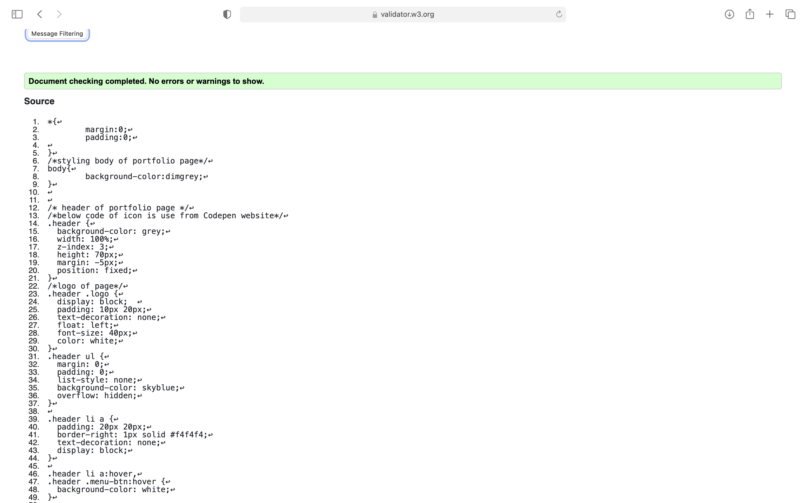
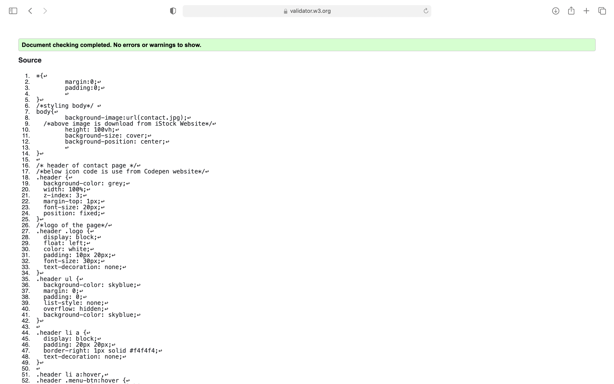
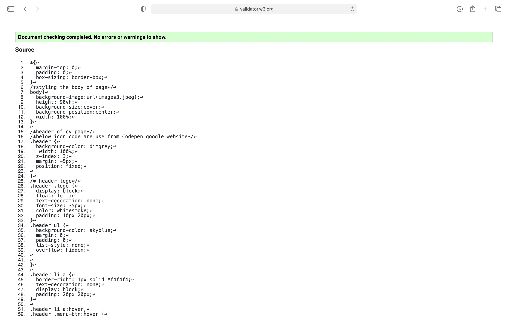
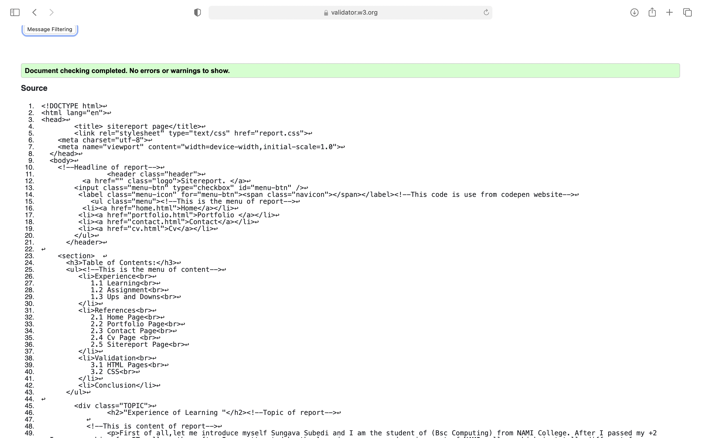

Table of Contents:
- Experience
1.1 Learning
1.2 Assignment
1.3 Ups and Downs
- References
2.1 Home Page
2.2 Portfolio Page
2.3 Contact Page
2.4 Cv Page
2.5 Sitereport Page
- Validation
3.1 HTML Pages
3.2 CSS
- Conclusion
"Experience of Learning "
First of all,let me introduce myself Sungava Subedi and I am the student of (Bsc Computing) from NAMI College. After I passed my +2 , I was searching for IT college then after I was attracted by the learning process and environment of NAMI college which is totally different from other college. It's been only two month I joined NAMI college. It's just a beginning of learning in this course.Since, This month we learning our modules through online classes because of pandemic situation. I am very excited to share my physical and online learning experience.
All student have different way of learning. Learning experiences are really meaningful, challenging and interesting. My experience in this course is incredible because I am very interested in Web development. It's include web design, web programming, web publishing and it usually refers to creating and maintaining website. From the first week we learned about Github and how to create repository in Github account as well as we learn Github mechanism. Then after, We learned to create web pages by using html and css ,this was the most excited part because we use different tags and coding to creating, designing, maintaining our webpages. And we observed many others thing like: layouts and positioning, inline elements, block elements, display properties, flex properties and float properties etc. These are the experience of physical class.
After week 6,We learned our modules through online classes. In my opinion, Physical class is much better than online class because online learning is difficult and stressful. I did hard work but I can't complete my work on time because of Internet problem or Electricity problem .Online class teach me one thing that I like is how to manage time for study and other work. And, In this course my online learning experience is good because our module teacher teach us very well .We continued our topic and we learned about CSS3 properties, HTML forms and so on . In term of learning ,My best part is to do CSS3 colors, gradient, transform(translate) in tutorial. I really enjoying .For now my classes are running like this.
Experience of Assignment and Ups, Downs
Now, I am sharing my experience ,ups and downs while I doing this assignment. This was my first websites. When I doing this assignment it was exciting as well as difficult also. We had to make five responsive webpages . I start from home page. Then after, I look in the brief of assignment and I get some ideas and also searched in google websites. And start making the content of page are not work properly ,fonts and link are not working after hundred attemps my home page almost completed but when I make hamburger icon it can't work properly .Then after, I search in google website and I use some code from codepen it can work properly and I use that hamburger icon code in all pages. Then after, I make portfolio pages it was easy because in this page we have to put dummy images for term II. After that, I made contact us page .In contact page we had to make form and our contact also I written my contact in form placeholder. And I made cv page I written my skill, contact, personal information, language, qualification etc in cv.
At last Sitereport, It was little bit difficult because I don't known the concept how to make this report after that I searched in google I doesn't find then i take some suggestion from module teacher .We have write experience of learning, have to give referencing of all images, code, icon which we use from websites.Almost I complete that part of report.When I do validation of all html and css there are many more error and I correction all error. And I give referencing of all web pages in sitereport by harvard referencing style. It's my little part of assignment experience.
This is my learning experience in web development, coding, design and debugging process of two month and experience of assignmentas well as ups and downs. I feel very lucky to share my experiences with you. Thank you.
"References of all Html Pages"
1. Home Page
Reference: Background Image title: Creative Background Image For Website.
Source of Image: Background image downloaded from google.
Link of background image:URL of Image
Concept of page:From youtube tutorial(web dev creation )
Link :URL of Youtube tutorial
Accessed:29 march 2018 and
Tagline of page:From NIKE(1987).
Link of hamburger icon code:URL of Icon code
Source:From google(Website:Codepen)
2. Portfolio Page
Reference:Images title:shutterstock,what makes a good or showered in the creative industries.
Source of images:Those placeholder images are portfolio images downloaded from google.
Image1 Link:URL of Image
Image2 link:URL of image
Concept of headline and page:From Module lecture.
Source:Module tutorial.
Hamburger icon code link:URL of Icon code
Source of icon:From google(Website:codepen)
3. Contact Us Page
Reference: Background Image title:20,418 Contact Us Stock Photos & Royality-Free Images,Creator:utah778,Credit:Getty images istockphoto.
Source of Image:Contact Us image Downloaded from google.
Background Image link:URL of Image
Concept of page:Easy Tutorials & Module lecture.
Link:URL of Youtube Tutorial
Source:Module tutorial And Youtube tutorial.
Accessed: 11 feb 2018
Hamburger Icon code link:URL of Icon code
Source of icon code:Google(Website:codepen)
4. CV Page
Reference:Concept of page: Module Lecture ,Module tutorial and from google.
Source code:https://www.patreon.com /online tutorials from youtube.
Background Image link:URL of Image
Source of Image:Green Light Background HD Stock Images.
Hamburger icon code link:URL of Icon code
Source of code:Google(Website:codepen)
{kind=link}
5. Sitereport Page
Reference:Source:Module Tutorial.
Concept of page:From module and Myself.
Source of Validation checked:Markup Validation Service.
Link:URL of validation
Hamburger icon code link:URL of Icon code
Source of code:Google(website:Codepen)
"Validation of HTML Pages and CSS"
1.Home Html and Css
2.Portfolio Html and Css
3.Contact Html and Css
4.Cv Html and Css
5.Sitereport Html and Css

Conclusion:
This was my first web page. It was little bit difficult to me.But ,At the last I did it. Hope It will be successful. I would like to say thank you our college and teachers to giving this exciting assignment.